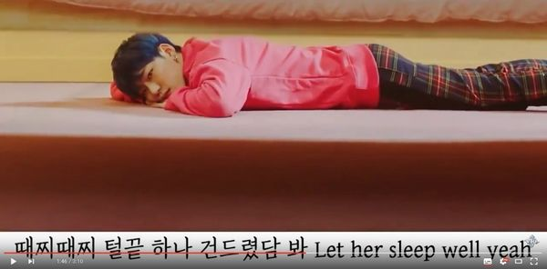

강간 문화는 강간을 부추기거나 남성이 여성과 함께 있을 때 강간 충동이 드는 것을 자연스럽다고 생각하는 태도를 비판하는 단어이다.
실제로 강간당했든 당하지 않았든, 여성들에게는 언제 강간당할지 모른다는 두려움이 늘 도사리고 있다. 강간 가능성만으로도 여성의 행동반경은 위축된다. 학교나 가정에서는 여성들에게 강간 당할 위험을 끊임없이 경고하며 통금시간을 두거나 옷차림을 단속하는 등 여성들이 조심하게끔 교육한다. 그 결과 여성들은 밤길을 걸을 때마다, 낯선 사람의 기척을 느낄 때마다 수시로 공포감을 느끼며 몸을 사리게 된다. 적극적이거나 자기주장을 펼치기보다 수동적으로 굴게끔 사회화되는 것이다. 한 마디로 강간은 “모든 남성이 모든 여성을 공포 상태로 몰아 넣는 의식적 과정, 그 이상도 이하도 아니다.”[1]
강간이 단순히 일탈적이고 특수한 행위가 아닌 여성을 통제하기 위한 남성의 수단이자 전략이라는 주장을 최초로 제기한 것은 1900년대의 래디컬 페미니스트들이었다.
1971년, 래디컬 페미니즘 단체 '뉴욕 래디컬 페미니스트들' 은 여성이라면 누구나 참여할 수 있는 ‘강간 피해 공개 발언’을 최초로 개최하였다. 이들은 뒤이어 세 달 뒤 ‘강간 피해 학회’를 개최하였고, 이날의 논의 이후 강간은 페미니즘의 주요 의제로 떠올랐다. 이전까지 강간은 자신의 성욕을 주체하지 못한 일부 하층계급 남성들이 저지르는 일탈적 행위로 인식되었다. 그러나 강간을 저지르는 이들은, 놀랍게도 일탈적이거나 비정상적인 인물이 아닌, 평범한 남성이라는 사실이 밝혀졌다. 이들은 한 여성의 애인, 남편, 사촌, 이웃이었다.[1]
브라운밀러는 특히 남성이 사회를 통제하고 여성을 지배하기 위한 주요 수단으로 강간을 활용한다고 주장했다. 강간에 대한 공포가 모든 여성의 삶을 휘두르는 권력 수단으로 활용되며, 모든 남성은 소수가 저지르는 성범죄에서 이득을 얻는다. 그들은 강간을 방관함으로써 그것이 만들어내는 공포 체제를 유지하는 데 일조하기 때문이다. 이러한 개념을 설명하는 단어가 ‘강간 문화(Rape Culture)’다.[1]
남성 문화는 왜 이토록 성범죄가 아니라 성범죄‘자’를 혐오할까. “나는 아니다.”를 증명하기 위해서는 아닐까. 성범죄의 원인은 일상의 성차별, 성역할 구조인데, 이를 수용하게 되면 모든 남성은 피곤해진다. 남성은 잠재적 피고인이 되지 않기 위해 기존의 여성관, 세계관 자체를 수정해야 한다. 그러나 소수 ‘변태’의 문제로 축소하면 성범죄는 남성 문화의 결과가 아니라 특정한 개인의 문제, 사회가 컨트롤할 수 없는 문제가 된다. 그럴수록 여성들은 밤거리나 여행에서 조심스럽게 행동하는 등 스스로를 통제하고 억압해야 한다.[2]
리베카 솔닛은 <남자들은 자꾸 나를 가르치려 든다>에서 강간 문화를 ‘강간이 만연한 환경, 미디어와 대중문화가 여성에 대한 성폭력을 규범화하고 용인하는 환경'으로 정의내렸다.
You & me 같이 차를 타고 ride
술 취했으니 눈 좀 붙여 잠깐만
어디 가서 쉴까 baby
난 손만 잡고 자
속은 뻔해 honey honey
but I want it and you know it(난 그걸 원하고 너도 그걸 알지)
강간일 수 있는 뚜렷한 동의 없는 성관계를 '너도 당연히 알고 있을' 거라며 합리화하는 가사이다.
|  |
─ 2017년 발매된 지코의 ‘She's a Baby’ 뮤직비디오 캡처
여자가 누운 침대 '아래'에 남자가 누워 있는 이와 같은 구도는 남자가 여자의 침대 밑에 '숨어있는' 것처럼 보이도록 만든다.